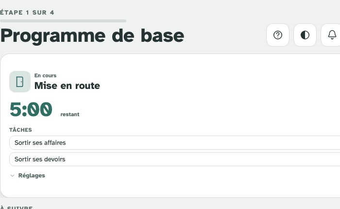

Pauline Lentes
Créer un environnement au plus près des besoins de tous les élèves : c’est la mission qui guide mon travail d’enseignante spécialisée, ancré dans la psychologie du développement de l’enfant et de l’adolescent.

Outils
Trois applications web conçues pour la classe et testées avec mes élèves, et une veille scientifique. Gratuit, sans compte, sans donnée envoyée à un serveur.
PL-planif’
Gestion de séance pour la classe : un déroulé minuté qui s’enchaîne seul, une vue à projeter au beamer, et une série d’outils annexes pour la gestion de groupe (tirage au sort, feu de circulation, sonomètre, suivi des tâches et des devoirs).
- Minuteur automatique et vue projetée plein écran
- Fonctionne hors-ligne, installable comme une application
PL-lect’
Un prompteur de lecture pour faire lire les élèves à voix haute, avec un texte codé et réglé pour rester accessible aux lecteurs les plus fragiles. Basé sur le moteur de décodage LireCouleur.
- Codage phonologique du texte (syllabes, sons, liaisons)
- Police, taille, espacement et couleurs entièrement réglables
PL-CPS
Programme annuel des compétences psychosociales pour le Cycle d’Orientation (CO, degrés 9e–11e HarmoS) : une compétence par mois, avec des activités courtes pensées pour un petit groupe d’appui.
- Une compétence travaillée par mois, sur toute l’année scolaire
- Supports prêts à projeter, sans préparation supplémentaire
Veille Neurodev’
Une veille sur la recherche internationale autour des troubles neurodéveloppementaux : un flash du jour, une revue hebdomadaire, des implications pour le CO. Alimentée automatiquement : à lire avec esprit critique.
Ouvrir la veille →Réflexions & partages
Des travaux de recherche et des réflexions pédagogiques qui nourrissent ma pratique.
Ce que la science sait du haut potentiel — et pourquoi le débat public l’ignore
Mon mémoire de Master en psychologie portait sur les représentations du haut potentiel intellectuel (HPI) chez les psychologues francophones (Lentes & Lutun, 2023). Ce travail m’a laissé une conviction qui dépasse largement le HPI et qui oriente aujourd’hui ma pratique en enseignement spécialisé : le débat public sur les troubles neurodéveloppementaux (TND) se joue presque entièrement sur le terrain de la vulgarisation, très rarement sur celui de la littérature scientifique — alors que c’est précisément cette dernière qui permet d’améliorer concrètement la prise en charge.
Lire l’article complet sur le haut potentiel →Réduire ↑
Dans la littérature scientifique, le profil HPI repose sur des critères relativement stables et mesurables : un QI égal ou supérieur à 130, une rapidité d’apprentissage, une grande curiosité intellectuelle. Le reste — l’hypersensibilité, la difficulté à se faire des amis, le sentiment de décalage permanent — n’a jamais été démontré de façon robuste et reproductible comme spécifique au HPI (Clobert & Gauvrit, 2021). Pourtant, c’est cette seconde liste, diffusée par des sites grand public et des tests qualitatifs en ligne, qui structure très largement les représentations populaires. Le mécanisme qui l’explique est connu depuis longtemps en psychologie : l’effet Barnum, soit la tendance à se reconnaître dans une description vague et flatteuse, indépendamment de sa pertinence réelle (Forer, 1949). Le même terreau alimente les débats en ligne sur l’autisme, le TDAH ou les troubles dys — des check-lists qui invitent à l’auto-identification, davantage qu’à la compréhension du fonctionnement réel de la personne.
Or mes résultats montrent que même des professionnels formés ne sont pas complètement à l’abri de cette dérive : face à des cas cliniques ambigus, une partie des psychologues interrogés mobilisent des critères non validés scientifiquement plutôt que les critères théoriques qu’ils défendent par ailleurs. Si le glissement touche des professionnels formés, il touche a fortiori le grand public — et ce glissement a un coût : du temps, de l’attention et des ressources dépensés à débattre de traits de personnalité anecdotiques, plutôt qu’à mettre en œuvre ce que la recherche a déjà établi comme efficace pour accompagner les profils neurodivergents (guidage explicite, outils de médiation, dispositifs adaptés à la zone proximale de développement de chacun).
Cela ne nie pas l’existence de tableaux cliniques complexes, avec de réelles difficultés associées — ils existent et nécessitent un accompagnement spécifique. Ce qui est nié, en revanche, c’est que ces tableaux représentent la majorité des situations. Sur plusieurs dimensions étudiées dans la littérature, les personnes HPI ne se distinguent pas défavorablement de la population générale : pas plus de difficultés relationnelles avec leurs pairs (Peters & Bain, 2011), pas de perfectionnisme plus marqué (Stricker et al., cités dans Clobert & Gauvrit, 2021), et une sociabilité plutôt meilleure, sans que cela leur soit délétère (Boisselier, 2021). Là où une différence existe — l’hyperstimulabilité émotionnelle, par exemple — sa taille d’effet reste faible (Winkler & Voight, 2016). Plus récemment, une méta-analyse portant sur 27 études sur l’anxiété et 15 sur la dépression n’a trouvé aucune différence significative entre personnes HPI et population générale sur ces deux dimensions (Duplenne et al., 2024). Dans la majorité des cas documentés, le HPI n’est donc pas un facteur de risque : il peut même agir comme facteur de protection.
Cette confusion tient en partie à un biais méthodologique classique : les professionnels — et les recherches menées en contexte clinique — rencontrent presque exclusivement des personnes en difficulté, puisque ce sont elles qui consultent. Les personnes qui fonctionnent bien avec un HPI, ou plus largement avec un autre profil neurodivergent, n’ont aucune raison de se signaler nulle part ; elles restent invisibles dans les échantillons cliniques, un biais de sélection apparenté au paradoxe de Berkson (Berkson, 1946). Tirer des conclusions générales à partir de ce qu’on observe le plus souvent en clinique revient donc à ignorer structurellement une grande partie — probablement la majorité — des personnes concernées.
C’est tout l’enjeu de cette réflexion : sortir d’une vision pathologisante par défaut de la neurodiversité. Fonctionner avec un profil HPI, autiste, TDAH ou dys n’est pas en soi un problème à corriger — ces fonctionnements sont aussi une forme de richesse dont nos sociétés ont besoin (Singer, 1998 ; Armstrong, 2010). La difficulté n’est jamais un attribut automatique du diagnostic : elle naît de l’écart, parfois important, parfois inexistant, entre le fonctionnement d’une personne et un environnement qui n’est pas toujours pensé pour accueillir cette diversité. Rester ancrée dans ce que la science montre — plutôt que dans ce qui circule — est ce qui permet réellement d’améliorer les conditions des personnes concernées, bien au-delà de n’importe quel débat sur des critères de personnalité non validés.
Références (10)
- Lentes, P., & Lutun, M. (2023). Les représentations du haut potentiel intellectuel chez les psychologues [Travail de mémoire, Master en psychologie]. Université de Lausanne.
- Clobert, N., & Gauvrit, N. (2021). Psychologie du haut potentiel : Comprendre, identifier, accompagner. De Boeck Supérieur.
- Forer, B. (1949). The fallacy of personal validation. Journal of Abnormal and Social Psychology, 44(1), 118–123.
- Peters, P. M., & Bain, S. K. (2011). Bullying and victimization rates among gifted and high-achieving students. Journal for the Education of the Gifted, 34(4), 624–643.
- Boisselier, N. (2021). La sociabilité et l’attrait pour la solitude des adultes à haut potentiel intellectuel. Psychologie Française, 66(4), 377–392.
- Winkler, D., & Voight, A. (2016). Giftedness and overexcitability: Investigating the relationship using meta-analysis. Gifted Child Quarterly, 60(4), 243–257.
- Duplenne, L., Bourdin, B., Fernandez, D. N., Blondelle, G., & Aubry, A. (2024). Anxiety and depression in gifted individuals: A systematic and meta-analytic review. Gifted Child Quarterly, 68(1), 65–83.
- Berkson, J. (1946). Limitations of the application of fourfold table analysis to hospital data. Biometrics Bulletin, 2(3), 47–53.
- Singer, J. (1998). Odd People In: The Birth of Community Amongst People on the Autistic Spectrum [Thèse de licence]. University of Technology, Sydney.
- Armstrong, T. (2010). Neurodiversity: Discovering the Extraordinary Gifts of Autism, ADHD, Dyslexia, and Other Brain Differences. Da Capo Lifelong Books.
Apprentissages fondamentaux (APF) et neurodiversité au Cycle d’Orientation
Les apprentissages fondamentaux (APF) désignent les conditions qui permettent à un élève de s’engager volontairement et consciemment dans les apprentissages scolaires : se détacher de l’ici-et-maintenant, adopter différentes perspectives, réguler son action, interagir dans des structures participatives. Ce cadre, développé principalement pour le cycle 1, reste pertinent bien au-delà — pour tout élève dont ces conditions ne sont pas encore consolidées, quel que soit son âge.
Lire l’article complet sur les apprentissages fondamentaux →Réduire ↑
Au Cycle d’Orientation, cette lecture change la manière d’aborder les difficultés d’apprentissage liées à la neurodiversité. Plutôt que de les interpréter uniquement à travers un diagnostic, on peut les lire comme l’expression d’apprentissages fondamentaux encore en construction, suivant une temporalité propre à chaque élève (Frith, 2003 ; Happé & Frith, 2006). Ce n’est pas la présence d’un trouble qui définit à elle seule les besoins d’un élève, mais l’écart entre ce que les attentes scolaires du cycle 3 présupposent comme acquis et ce qui, chez certains élèves, reste dans la zone proximale de développement.
Cette perspective oriente aussi les dispositifs pédagogiques. Le passage de l’hétérorégulation à l’autorégulation (Vygotski, 1934/2018) ne va pas de soi : il nécessite un guidage explicite, des outils de médiation, et des espaces où l’erreur et l’essai ont leur place. Le jeu de faire-semblant — la logique du « comme si » (Pramling et al., 2019) — est l’un de ces espaces : il permet de travailler des compétences complexes (anticiper une situation, adopter la perspective d’autrui, gérer un imprévu) à distance de la charge émotionnelle d’une situation réelle, avant d’en affronter la version vécue. Cette alternance entre simulation et réalité s’inscrit dans une logique de continuum d’apprentissage — observer, imiter, faire avec, faire seul — plutôt que dans une logique de comblement de lacunes (Truffer-Moreau, Clerc-Georgy & Paccolat, 2022).
Ce cadre théorique nourrit directement ma pratique en classe ressource et en structure d’appui : il permet de concevoir des dispositifs qui accompagnent le rythme de développement propre à chaque élève, plutôt que de chercher à le faire converger de force vers une norme scolaire uniforme.
Références (5)
- Frith, U. (2003). Autism: explaining the enigma. Blackwell.
- Happé, F., & Frith, U. (2006). The weak coherence account. Journal of Autism and Developmental Disorders, 36(1), 5–25.
- Pramling, N., Wallerstedt, C., Lagerlöf, P., & Björklund, C. (2019). Play-Responsive Teaching in Early Childhood Education. Springer.
- Truffer-Moreau, I., Clerc-Georgy, A., & Paccolat, C. (2022). Continuum d’apprentissage [Support de cours BP61SPE]. HEP Vaud.
- Vygotski, L. S. (1934/2018). Pensée et Langage. La Dispute.
Compétences psychosociales et climat de classe : les conditions du vivre-ensemble et de l’apprentissage
Les compétences socio-émotionnelles (CSE) — ou compétences psychosociales — se définissent, selon l’Organisation mondiale de la santé (1997), comme « la capacité d’une personne à répondre avec efficacité aux exigences et aux épreuves de la vie quotidienne », en maintenant un état de bien-être mental dans ses relations aux autres, à sa culture et à son environnement. Elles émergent dès la petite enfance (Richard, Gay & Gentaz, 2021) et se travaillent, comme n’importe quelle autre compétence, tout au long de la scolarité.
Lire l’article complet sur les compétences psychosociales →Réduire ↑
Leur enseignement n’est pas un supplément d’âme : les émotions orientent l’attention, influencent la mémorisation et modulent la motivation (Cuisinier & Pons, 2011). Le plaisir d’apprendre — une émotion complexe, non réductible à une satisfaction immédiate — se construit à partir de trois leviers : la perception de compétence, le sentiment d’autonomie et la pertinence perçue de la tâche. Aucun des trois ne se développe dans un climat où la peur de l’erreur monopolise l’énergie mentale des élèves ; c’est la sécurité du climat de classe qui crée les conditions propices à l’apprentissage (Glaser-Zikuda & Mayring, 2004).
Ce constat rejoint un champ de recherche plus large sur le climat scolaire, entendu non comme une ambiance diffuse mais comme un ensemble de dimensions objectivables : la sécurité, la qualité des relations, l’enseignement-apprentissage et l’environnement institutionnel (Cohen, McCabe, Michelli & Pickeral, 2009). Un climat positif agit comme facteur de protection, en particulier pour les élèves dont le parcours les expose à un risque accru d’exclusion : il soutient leur sentiment d’appartenance et leur engagement, condition du vivre-ensemble dans des classes de plus en plus plurielles (Audet et al., 2024). Au Cycle d’Orientation, où les parcours sont souvent marqués par des ruptures scolaires ou des difficultés d’apprentissage, cette dimension n’est pas accessoire : elle conditionne la possibilité même d’un travail pédagogique.
Le PER inscrit ces compétences parmi les compétences transversales, mais leur transmission repose largement sur la modélisation : l’enseignant qui nomme son propre état émotionnel, qui travaille ses propres compétences socio-émotionnelles, enseigne autant par ce qu’il dit que par ce qu’il montre. Des outils concrets structurent cette pratique au quotidien — thermomètre des émotions, journal de bord, conseils de classe, messages clairs, médiation par les pairs — mais leur efficacité dépend de sept conditions documentées dans la littérature : une intégration explicite et intentionnelle au quotidien scolaire, une approche universelle (adressée à tous, pas seulement aux élèves en difficulté), une formation des enseignants, une cohérence et une progressivité sur la scolarité, l’implication des familles, une culture d’école favorable, et un suivi réel des dispositifs mis en place. Ce n’est pas un vœu pieux : une méta-analyse portant sur plus de 200 programmes scolaires montre que l’enseignement structuré des compétences socio-émotionnelles améliore non seulement le comportement et les compétences sociales des élèves, mais aussi leurs résultats scolaires, de l’ordre de 11 points de percentile en moyenne (Durlak, Weissberg, Dymnicki, Taylor & Schellinger, 2011).
Travailler le climat de classe et les compétences psychosociales, ce n’est donc pas choisir entre le bien-être des élèves et leurs apprentissages : c’est reconnaître que l’un est la condition de l’autre. C’est cette articulation qui structure aujourd’hui PL-CPS, le programme annuel de compétences psychosociales que j’ai développé pour mon groupe d’appui au Cycle d’Orientation.
Références (7)
- Organisation mondiale de la santé. (1997). Life skills education in schools. OMS.
- Richard, S., Gay, P., & Gentaz, É. (2021). Pourquoi et comment soutenir le développement des compétences émotionnelles chez les élèves âgés de 4 à 7 ans et chez leur enseignant·e ? Raisons éducatives, 25, 261–287.
- Cuisinier, F., & Pons, F. (2011). Émotions et cognition en classe.
- Glaser-Zikuda, M., & Mayring, P. (2004). Développer le plaisir d’apprendre à l’école. Dans Lafortune, L., Doudin, P.-A., Pons, F., & Hancock, D. (dir.), Les émotions à l’école (pp. 101–121). Presses de l’Université du Québec.
- Cohen, J., McCabe, E. M., Michelli, N. M., & Pickeral, T. (2009). School climate: Research, policy, practice, and teacher education. Teachers College Record, 111(1), 180–213.
- Audet, G., Gosselin-Gagné, J., Fowler, E., Caron, M.-È., Maynard, C., & Beauregard, C. (2024). Prendre en compte les réalités d’élèves réfugié·e·s afin de soutenir leur résilience. Revue Suisse des Sciences de l’éducation, 46(1), 74–85.
- Durlak, J. A., Weissberg, R. P., Dymnicki, A. B., Taylor, R. D., & Schellinger, K. B. (2011). The impact of enhancing students’ social and emotional learning. Child Development, 82(1), 405–432.
À propos
Psychologue de formation — Bachelor à l’Université de Genève, Master en psychologie du développement de l’enfant et de l’adolescent à l’Université de Lausanne — je complète aujourd’hui un Master en enseignement spécialisé à la HEP Vaud, après un CAS en autisme à l’Université de Genève. J’enseigne au Cycle d’Orientation, où j’accompagne des élèves en difficulté d’apprentissage ou de comportement, avec ou sans trouble du spectre de l’autisme.
Me contacter
Une question sur un outil, une collaboration, un échange de pratique : écrivez-moi.